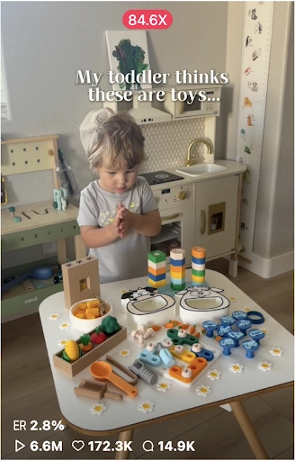
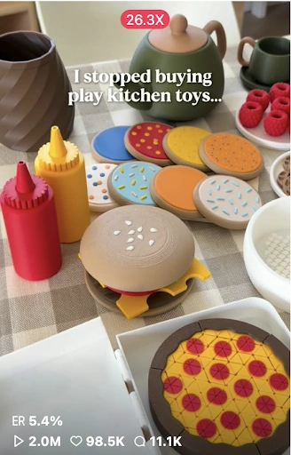
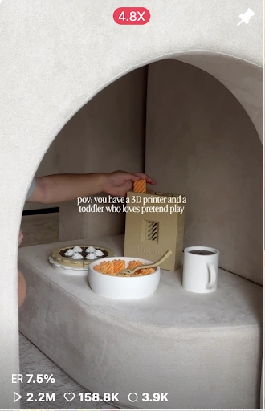
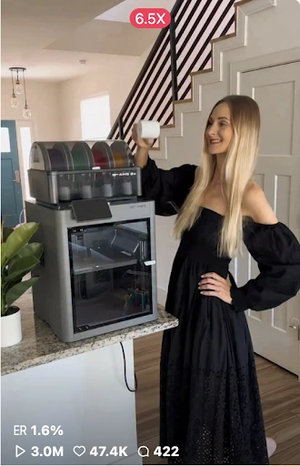
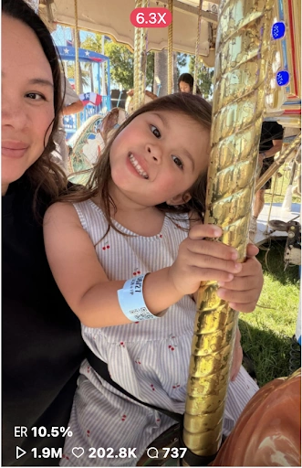
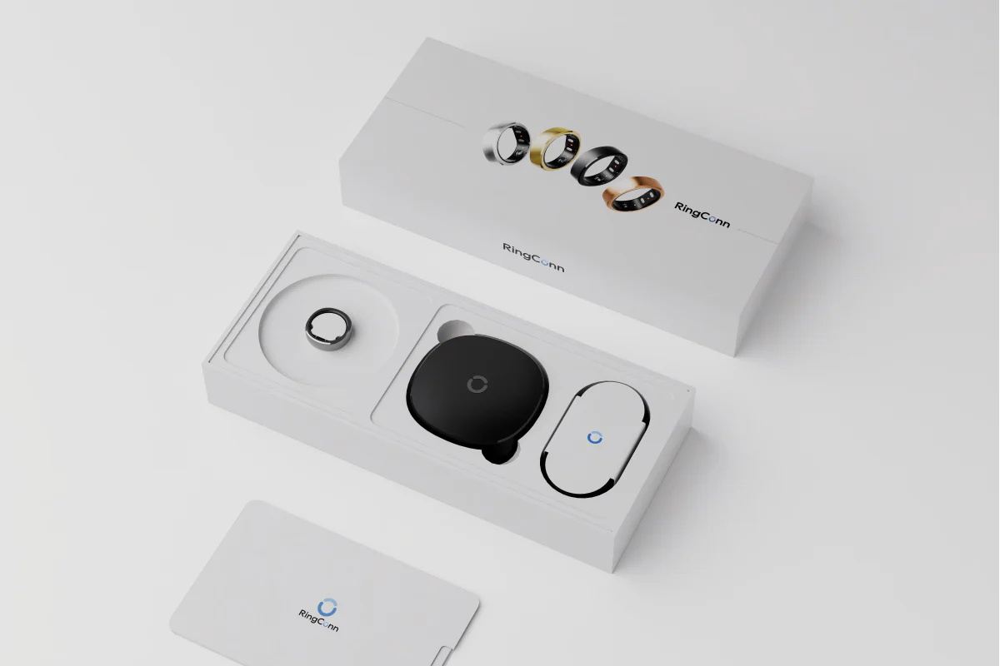
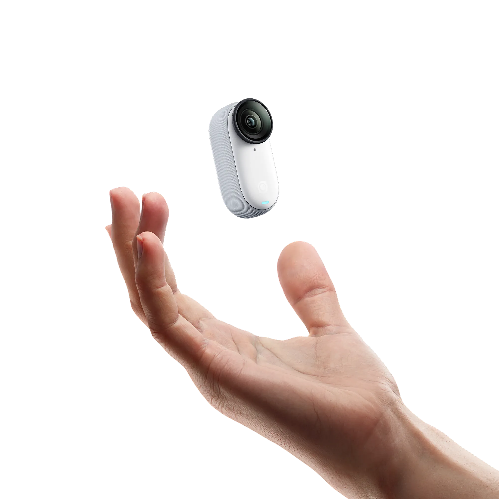

DJI
Action camera creator seeding
Outdoor and extreme-sports creators showed off the camera’s stabilization and durability.
INFLUENCER & SOCIAL MEDIA
Bandalabs & Bambu Lab · Influencer Marketer
Bambu Lab · 2026 · EU · NA · LATAM

Impressions in five months
Campaign totals as of August 30.We moved the story from print speed to family life: sensory play with kids, printed toys for the family pet, and modular home setups.
Helped write the pitch brief and shape the parent-child angle.
Broke the 240-creator, 960-video plan into monthly and weekly publishing tasks around the promotional moments.
Led creator strategy and content direction across EU, NA, and LATAM.
Worked with Bambu Lab’s Head of PR & Communications to find standout creators and support creator interviews.





RingConn was launching its flagship Gen 2 Smart Ring heading into Black Friday and the year-end holidays. We ran a creator campaign on short-form video: creators showed the ring in daily life and shared honest reviews.

Outdoor and extreme-sports creators showed off the camera’s stabilization and durability.

Hands-free, first-person videos from lifestyle, parenting, and city creators.